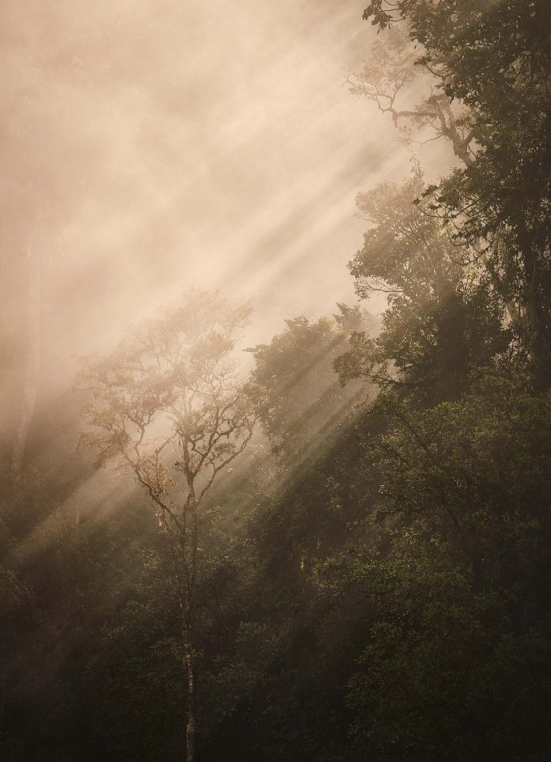
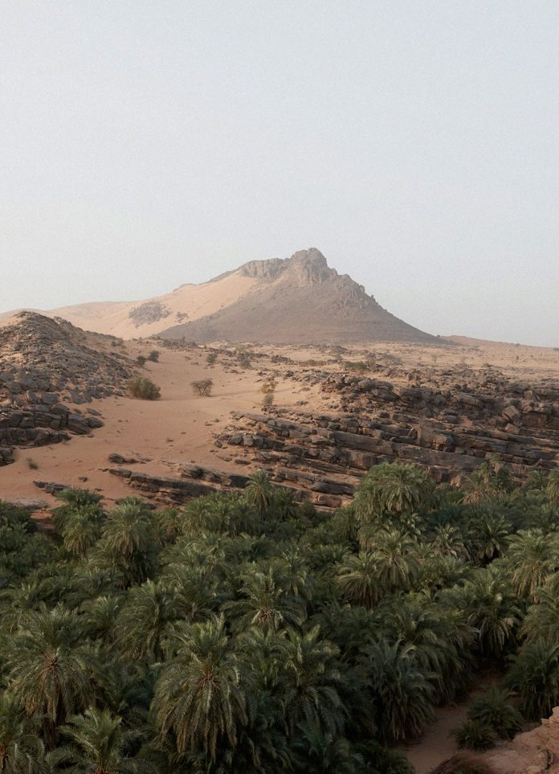

-
CHILE
Patagonia
Patagonia occupies the tip of the Americas, separated from the Pampas to the north by the Huincul Fault, washed to the east by the Atlantic, and to the west by the Humboldt Current.
-
Kepler Track
Traversing the wild and ever-changing landscapes of New Zealand’s South Island.
-
Unguarded, Tentatively
A seasonal essay.
-

TRAVEL
FRANCE
Hellenic Spirit
A visit to Villa Kerylos on the French Riviera, modelled after 2nd century BCE homes of the Greek island of Delos.
-
PORTUGAL
Torel 1884
A conceptually designed hotel and former palace in Porto, inspired by Portugal’s Age of Discovery.
-
MOROCCO
Mirage
A stay at Amanjena, on the outskirts of Marrakech, Morocco.
-
FASHION
TRAVEL
INDIA
JAIPUR
Natural Indigo
Attending the launch of Nila House, a gallery, retail space and design platform in Jaipur, Rajasthan, supporting traditional Indian textiles and natural dyeing.
-
PORTUGAL
Quinta da Côrte
A winery and guesthouse designed by French architect and interior designer Pierre Yovanovitch, set in Portugal’s port wine region, the Douro Valley.
-
GALLERY
TRAVEL
SWITZERLAND
Alpine Air
Exploring the art and nature of St. Moritz, Switzerland, with a visit to Badrutt’s Palace, Museum Susch, and Hauser and Wirth’s latest gallery.
-
Sea Change
Attending a wellness discovery programme at SHA, a modern wellness retreat set beside the Serra Gelada on the coast of Spain.
-
Sound View
A tour of the historic seaside village of Greenport, on the North Fork of Long Island, New York.
-
BELGIUM
ANTWERP
Augustinian Order
Discussing the renovation of August Hotel, a former convent in Antwerp’s Green Quarter, with hotelier Mooche Van Hool and interior architect Vincent Van Duysen.
-
ITALY
Sprezzatura
At Il Pellicano, by the Tyrrhenian Sea, hotelier Marie-Louise Sciò shares her passion for reviving history, and her creative vision for Pellicano Hotels.
-
Noble Brew
Dojima, the UK’s first Japanese-owned sake brewery, founded by Yoshihide Hashimoto, and situated around the Fordham Abbey estate in Cambridgeshire.
-

MEXICO
TULUM
Arching Palms
A visit to Casa Pueblo in Tulum, in the Mexican state of Quintana Roo.
-

RWANDA
Among Emerald Leaves
Rwanda’s One&Only Nyungwe House, set on a tea farm at the edge of Nyungwe National Park, one of the oldest rainforests in East Africa.
-
ENGLAND
CAMBRIDGE
Erudite Revival
A visit to the collegiate cityscape of Cambridge, and a stay at the University Arms Hotel, a former Regency-era coaching inn.
-

MAURITANIA
An Hourglass Upturned
An exploration of desert landscapes in the Adrar Region of Mauritania’s Sahara.
-
BHUTAN
The Geography of Happiness
Exploring the valleys and peaks of Bhutan, in search of happiness.
-
INDIA
Fort of the Sun
A visit to the remote, desert fort hotel Mihir Garh, in the Thar desert of Rajasthan.